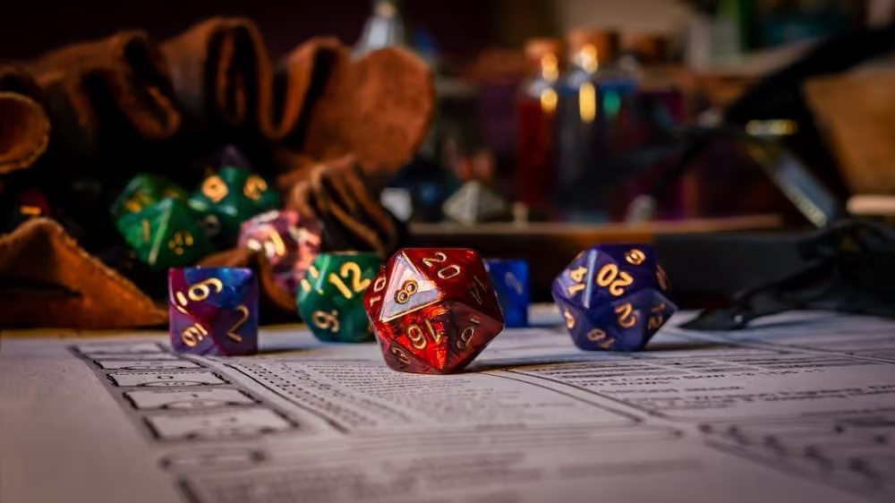
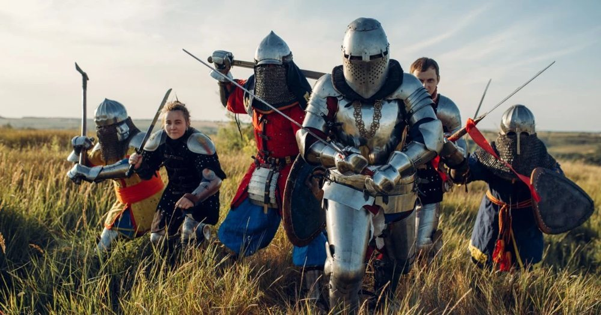
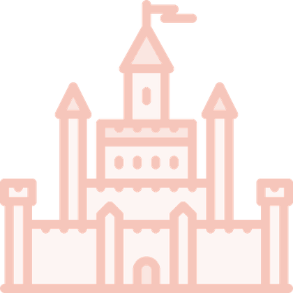

חובה
המינימום ההכרחי
- חברים, בין שניים לחמישה
- דף, עיפרון ומחק
- סט קוביות (או אפליקציה)
אין קוביות בבית? הטילו כאן.
בחרו דמות. הטילו קוביות. צרו סיפור.
קבוצות, כנסים, חנויות, חוגים, שיטות ומדריכים. כל מה שקורה בקהילת משחקי התפקידים בישראל, במקום אחד.
אתם עומדים מול השער. מה אתם עושים?
מתי הכנס הבא? ללוח המלא
מתקיים בדרך כלל החודש
אירוע הדגל השנתי של קהילת חובבי הז'אנר, עם מתחם ענק למשחקי תפקידים, דוכנים ועוד. מיקום: תל אביב.
באותו חודש: לארפ ליברה.
המועדים משוערים. כדאי לבדוק באתרי המארגנים.
ארגונים, כנסים וקבוצות, חנויות, מתחמי משחק וחוגי מבוכים ודרקונים לילדים. אתם לא לבד: בחרו סוג, או אזור במפה. עוד על קהילת משחקי התפקידים בארץ.
הגוף המרכזי המוכר לקידום התחביב. מארגנת כנסים (כרמיקון), תומכת בפרויקטים, אירועים ויוצרים, ומפעילה את הוצאת 'גיבורים'.
שותפה בארגון כנסים מרכזיים כמו פסטיבל אייקון, ומקדמת את תרבות הז'אנר בישראל.
מיזם של ראובן צירל-מנדלוביץ' המציע משחקים מקוריים, תרגומים נגישים ופעילויות קהילתיות.
הקהילה המקוונת הוותיקה והמובילה של התחביב, עם פורומים פעילים ותכנים רבים.
הוצאה לאור של משחקי תפקידים ותכנים רבים מאז 2003, כולל 'פאת'פיינדר בעולמות פראיים'.
מיזם העוסק בתחום משחקי התפקידים בעברית. המיזם כולל: משחק התפקידים והערכה המומלצת ביותר כיום למתחילים ולצעירים, הוצאת ידיעונים, ארגון כנסי "הרפתקון", ועוד.
המרכז הישראלי למשחקי לארפ. מארגן אירועים בארץ ובחו"ל ומהווה מוקד ידע וציוד.
אירוע הדגל השנתי של קהילת חובבי הז'אנר, עם מתחם ענק למשחקי תפקידים, דוכנים ועוד.
כנס משחקי השולחן המוביל בישראל, מתקיים באוגוסט ומציע מגוון עצום של משחקים למתחילים וותיקים.
אירוע לארפ ותיק עם דגש על סיפור מתמשך ועולם עשיר בו השחקנים מעצבים את העלילה.
כנס משחקי תפקידים ופנטזיה המתקיים בכרמיאל, עם דגש על קהילת הצפון.
כנס משחקי תפקידים של חרבות וכשפים בתל אביב. הכנס מתקיים מספר פעם בשנה (בדרך כלל בחנוכה, פורים, פסח ובקיץ).
כנס שנתי למדע בדיוני, פנטזיה ומשחקי תפקידים, המציע מגוון פעילויות והרצאות.
הקבוצה הגדולה והפעילה ביותר לדיונים, שיתוף, ומציאת קבוצות משחק.
הקבוצה השנייה הגדולה והפעילה ביותר לדיונים, שיתוף, ומציאת קבוצות משחק.
הקבוצה המרכזית של קהילת הלארפ לדיונים, עדכונים על אירועים ותיאומים.
לוח המודעות הוותיק והיעיל ביותר למציאת קבוצת משחק לפי אזור גיאוגרפי.
חנות משחקים וקהילה בדיזנגוף-סנטר המציעה מגוון רחב של משחקי תפקידים, קלפים ולוח.
בית קפה למשחקים עם חדר משחקי תפקידים ייעודי וספריית משחקי לוח ענקית.
חדר משחקי התפקידים הראשון של ישראל, חדר ייעודי ומעוצב לחוויית משחק סוחפת.
חדרי משחק מעוצבים עם תפאורה, מנחים מקצועיים, חנות לציוד (מיניאטורות, קוביות) ושירותי הדפסת תלת מימד.
חנות המתמחה במוצרי משחקי תפקידים, משחקי קלפים ואביזרים.
חנות משחקים וקהילה המציעה מגוון רחב של משחקי תפקידים, קלפים ולוח.
חנות המשחקים הגדולה של ירושלים ובעלת מבחר גדול של משחקי קלפים. מארגנת גם אירועים וחוגים.
יוצרת הרפתקאות משחקי תפקידים, מפעילה קייטנות דמיון, הפעלות לימי הולדת ולילדי עובדים.
מפעילה חוגי העשרה במגוון רחב של שיטות בבתי ספר ומתנ"סים.
מרכז חוגים וקהילה לילדים ונוער עם דגש על העצמה ומיומנויות חברתיות.
חוגי משחקי תפקידים בקבוצות קטנות עם מנחים מנוסים, תוך דגש על פיתוח כישורים.
חוגי משחקי תפקידים לילדים ונוער, דגש על פיתוח יצירתיות ומיומנויות חברתיות.
תכנית החוגים של פריק תל אביב. מותאם לכל הגילאים, הלוחמים, והמכשפים!
חנות קטנה ומשפחתית בגליל (כרמיאל) הנועדה להרחיב את קהילת משחקי תפקידים, שחקני הקלפים, אוהבי הלגו וכוכבי הוורהאמר במקום אחד.
עסק משפחתי בו מייצרים אביזרים מעולם הפנטסיה והמד"ב - בעבודת יד
חברת חוגים וסדנאות למשחקי תפקידים המספקת תוכן עשיר ומקצועי לכל הגילאים - מחוגים לילדי גן ועד גימלאים
פעילויות מגוונות במשחקי תפקידים, כולל חוגים, ימי הולדת, סדנאות, קייטנות, תל"ן וגפ"ן.
חוג המבוכים ודרקונים של הגובלין החכם לכיתות א-ו
חוגי מבוכים ודרקונים, ימי הולדת, וקייטנות מגילאי היסודי ועד התיכון
עסק משפחתי חברתי למשחקי הרפתקאות ובריחה. ההפעלות מתאימות לישובים, ארגונים וחברות, פסטיבלים, ימי הולדת לכל הגילאים ואירועים פרטיים.
חוגים חיים, חוגי שולחן, סדנאות ופעילויות במשחקי תפקידים
חנות משחקי קופסה בירושלים הכוללת ספריית משחקים בעברית ובאנגלית, ערבי משחקים לכל הגילים ופעילויות נוספות
אירועי משחקי תפקידים בהתאמה אישית בכל הארץ.
חוגים, סדנאות, הרצאות, וערבי חברה בתחום הפנטסיה
חנות משחקי קופסה עם ספריית משחקים ענקית, חדר פרטי להנחיית משחקי תפקידים וערבי משחקי תפקידים. מתאים גם לאוכלוסיות הדוברות הרוסית.
סשנים אימרסיביים אקסקלוסיביים, עם מנחה בעל 30 שנות ניסיון, בהתאמה לקבוצה, במקום הנוח ללקוח.
המותג הישראלי - תוצרת כחול לבן - המוביל! לעיצוב, מידול, והדפסת מיניאטורות למשחקי שולחן, משחקי קופסא, בהזמנה אישית או מקטלוג קיים נרחב ומתחדש.
רשת חנויות משחקי לוח, משחקי קופסה ומשחקי תפקידים, הכוללות אירועים חברתיים לגיקים מכל הסוגים.
הפיניקס של לארפ גלדיאטור הוא מתחם למשחקי צוות-חללית בתוך ספינת חלל עתידנית ובתוכה מערכות טכנולוגיות רבות המייצרות חוויית משחק מיוחדת. במתחם שלל פעילויות המתאימות למבוגרים, נוער וילדים.
משחקים, פעילויות, קייטנות, הרכות להורים ולילדים - דרך פנטסיה ומשחקי תפקידים
פעילויות וימי שיא בעיקר במרכזי מחונניםם ומצטיינים באזור המרכז.
חברה מהמובילות בארץ בתחום משחקי התפקידים, עם מעל לחמש עשרה שנות ניסיון. חוגים, קייטנות, מסיבות, ימי הולדת, דמיות שטח ותיאטרון רחוב, הפעלות מיוחדות לילדים ובני נוער, פעילויות למחוננים, כל אלה ועוד.
חוגים וסדנאות משחקי תפקידים.
חוגי משחקי תפקידים חיים לפיתוח כישורים חברתיים עם דגש לשטח וטבע.
חוגי מבוכים ודרקונים לילדים ולנוער עם דגש על פיתוח מיומנויות חברתיות, שיתוף פעולה, דמיון וביטחון עצמי. חוגים לקבוצות המותאמות לילדים עם קשיים רגשיים/חברתיים וכן קבוצות להכשרת מנחי משחק צעירים.
חוגי משחקי תפקידים, הנחייה פרטית, ספק חרבות ספוג, סדנאות חרבות, ועוד!
לא נמצאו תוצאות התואמות לחיפוש שלך. נסו לחפש לפי אזור (למשל "גוש דן") במקום לפי יישוב, או חזרו לסינון "הכל".
מליאת העמותה למשחקי תפקידים תתקיים ב-18/12/25.
בה, יתקיימו בחירות לוועד העמותה ולוועדת הביקורת של העמותה.
מכירת הכרטיסים המוקדמת של פסטיבל אייקון 2026: פלאות נפתחה!
המכירה תתבצע דרך האתר
פינת המתחילים: חדשים בתחביב? מכאן מתחילים.
משחקי תפקידים הם פעילות חברתית שבה כל משתתף מגלם דמות בעולם בדיוני ומגיב לסיטואציות לפי אופייה. שיטה קובעת את החוקים, ומנחה מוביל את העלילה.
המטרה: לספר יחד סיפור בלתי נשכח, ולפעמים פשוט לצחוק ביחד. עוד על משחקי תפקידים

משחקי תפקידים שולחנייםTTRPG סיפור שיתופי סביב שולחן או אונליין, עם דמיון, חוקים, קוביות ומנחה. מה זה משחק תפקידים שולחני
משחקי תפקידים חייםLARP לא רק מספרים את הסיפור, חיים אותו: בתלבושות, בגוף ובמרחב אמיתי. מה זה לארפרוצים לראות איך נראה משחק?הסרטון "מורה מבוכים" של דונקי מסביר את זה בכיף.
לצפייה בסרטוןהחדשות הטובות: לא צריך הרבה! אפשר להתחיל לשחק עם ציוד בסיסי שכבר יש לכם בבית.
חובה
אין קוביות בבית? הטילו כאן.
הדרך המומלצת ביותר
ערכות כמו של "מבוכים ודרקונים" או "חרבות וכשפים" כוללות כל מה שצריך למשחק הראשון: ספר חוקים מקוצר, הרפתקה מוכנה, דמויות וקוביות.

למשקיענים, לא חובה
עם הזמן אפשר לשדרג את החוויה עם מיניאטורות (דמויות פלסטיק), מפות קרב, מסתור למנחה וספרי הרחבה. אבל זה ממש לא חובה כדי ליהנות!
16 מדריכים לשיטות שמשחקים בישראל, מהקלות ביותר ועד המורכבות. הנה ארבע שמתאימות במיוחד למתחילים. לכל השיטות
פנטזיה אפית עם מקצועות, רמות וקרבות טקטיים
נקודת הכניסה הסטנדרטית לתחביב. קל למצוא קבוצה וחומרים למתחילים, כמו 'ערכת ההתחלה' המצוינת.
פנטזיה קלאסית, חזרה לשורשים של התחביב
מעולה למתחילים ולילדים. ערכת המתחיל בעברית מלמדת את המשחק צעד-אחר-צעד, כולל הרפתקת סולו.
פנטזיה הרפתקנית, אקשן מהיר וקולנועי
הטוב משני העולמות: עומק עלילתי עם חוקים קלילים. ספר הבסיס בעברית כולל את כל מה שצריך כדי להתחיל לשחק.
מנוע סיפורי: מהלכים במקום חוקים מפורטים
מנוע פשוט ללמידה המאפשר להתמקד בסיפור. מתאים למגוון רחב של ז'אנרים וסגנונות משחק.
הצעד המרגש הבא.
הצטרפו לקבוצות הקהילה הגדולות באונליין, שם מנחים ושחקנים מפרסמים מודעות.
יש חוגים ופעילויות שבהם מנחים מנוסים מלמדים את המשחק. למה זה טוב לילדים?
מכירים קבוצה, חוג, חנות או כנס שחסרים כאן? מצאתם טעות? ספרו לנו ונוסיף:
roleplay.top@outlook.co.il